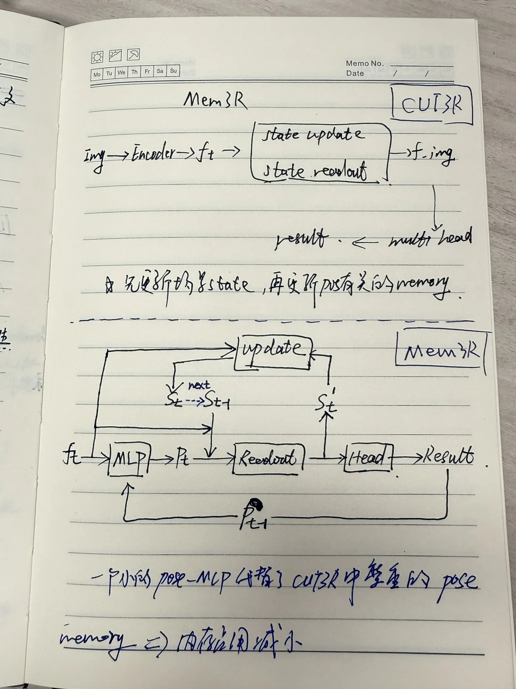
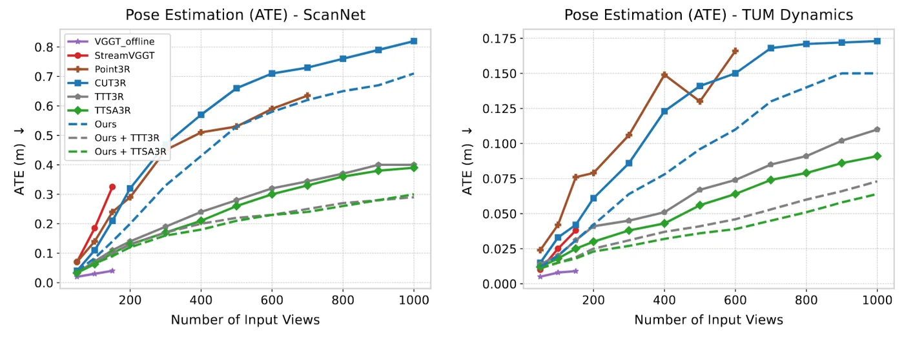
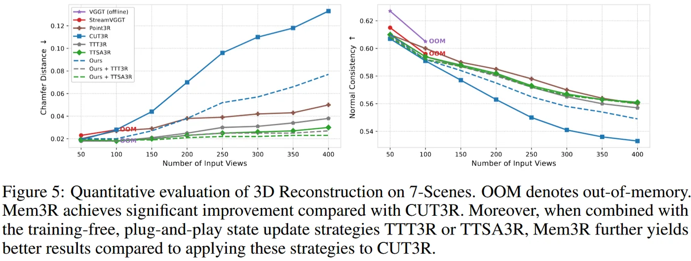
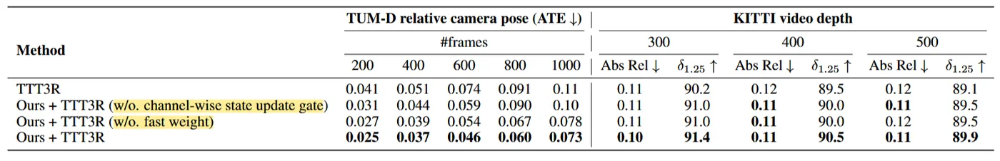

将相机跟踪与几何建图进行解耦，提升长序列的时间一致性，降低模型参数量，并可即插即用。
Pipeline

Method
dual-memory design：(1) 相机跟踪的 implicit fast-weight memory 𝑊；(2) 几何建图的 explicit token memory 𝑆。
channel-wise gated update：每个 token 的每个 channel 都能单独控制保留还是更新。
pose 为什么变好： Mem3R 改变 CUT3R 固定长度的 pose memory，用一个轻量 MLP 在线（TTT）tracking。更稳的显式状态更新减少了历史上下文污染。
Initialize from the pre-trained 512-DPT CUT3R weights and fine-tune all modules jointly.
Training takes approximately 10 hours on 32 NVIDIA H100 GPUs with a batch size of 8 per GPU.
reduces the model size from 793M to 644M parameters.
Experiments


